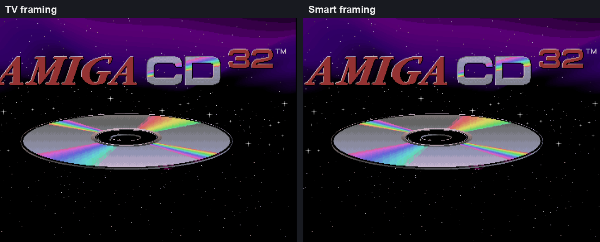

Copperline 1.0.0: the first stable release
Copperline 1.0.0 is out. It is the first stable release, after two weeks of testing the release candidate, and the 23rd release since the source went public on 14 June.
Testing the candidate turned up a crash on Macs older than macOS 14.2, a corrupted background in Castlevania AGA on the CD32, an A2091 ROM that always put its bounce buffers in Chip RAM, and VHD hard disks that could not be opened. All four are fixed. Thank you to everyone who tried it and reported problems.
Copperline 1.0 at a glance
- Machines: A1000, A500, A500+, A600, A1200, A3000, A4000, CDTV and CD32, with OCS, ECS and AGA chipsets and 68000 to 68060 CPUs, FPUs and MMUs.
- Accuracy: the CPU and custom chips run on one colour-clock timeline, with the chip bus shared out cycle by cycle. Timing is checked against a real A1200, A4000 and CD32, and 45 test programs are compared pixel for pixel on every change.
- Ready to run: the open AROS ROM is bundled, so you can start without a Kickstart. WHDLoad packages and Amiga programs boot directly.
- Media and expansion: floppy images including IPF and SCP, real drives through a Greaseweazle, IDE and SCSI hard disks, CDs, host folders, RTG graphics cards, Ethernet and built-in MIDI synthesizers.
- Playing: save states, rewind, run-ahead, CRT shaders and a 1084 monitor front, gamepads, and rollback netplay for up to four players with up to eight spectators.
- Developing: a debugger beside the live display with reverse stepping, a frame analyzer, GDB, VS Code source debugging, profiling, a control protocol and an MCP server.
- Everywhere: macOS, Windows and Linux builds, the browser version and a RetroArch core.
Smart framing
The TV overscan setting crops the picture to roughly what a television showed, so software that placed its picture a little off-centre lost part of it. The CD32 boot logo is one example. The new Smart framing keeps the TV crop and moves it sideways to follow the display the program sets up: by at most eight lo-res pixels, only once the position has held for 25 frames, and not at all on blank frames.

With autocrop and integer scaling as well, Smart fits the whole detected display at the largest whole-pixel scale, and odd multiples are now possible: with the status bar hidden, a 320x200 PAL picture fits at 5x on a 1920x1080 screen. Video Settings → Framing switches between TV, Smart and Full overscan while a program runs. TV remains the default, and the browser version has Smart too. See the display settings.
Native screenshots, window placement and the title bar
Recording → Save Native Screenshot (1:1) saves the Amiga's own pixels, cropped to the display window, before any scaling, aspect correction or shaders: a 320x256 screen saves as 320x256. An option makes the camera button do the same, and --native-screenshots and the control protocol can ask for it.
New settings choose the monitor the window opens and goes fullscreen on (--monitor, with --list-monitors to see the choices), the window's position (--window-position), its starting size (--window-scale) and whether it opens maximized (--maximized). Each has a [display] key, and the launcher has Host monitor and Window position rows. The title bar now shows the machine and the boot ROM, and [display] title sets your own format.
Hard disks
Fixed and dynamic VHD images, the format WinUAE creates, attach read/write on every hard-disk controller. Before, a fixed VHD's footer appeared to the Amiga as an extra sector and a dynamic VHD read as garbage. The bundled A2091 ROM now puts its bounce buffers in Fast RAM the controller can reach rather than always in Chip RAM, overlaps reads with copying, and no longer wraps transfers that run past a SCSI command's block-number limit.
AGA sprite scan-doubling
With SSCAN2 set, Lisa ignores the top bit of a sprite's horizontal start, so it matches twice on each line, 256 lo-res pixels apart. A sprite appears at each match that comes after its DMA data has arrived. Copperline showed every such sprite once, at the first match. It now models both, using FMODE and the sprite's state at each beam position, which repairs the first-stage background in Castlevania AGA on the CD32.
Other changes
- The About panel has a Check for updates button. It asks GitHub for the latest release only when you press it; the privacy policy describes it.
- Guest programs can print debug messages through WinUAE-style ports at
$BFFF00and$BFFF04, and the debugger console keeps messages from before it was opened. See memory-mapped debug output. - The bundled AROS ROM is refreshed from upstream, with about 35 KB more free memory for programs.
- Clicking the status bar's speaker mutes and unmutes, and loading a save state no longer changes your volume.
- The middle mouse button can optionally release a captured mouse.
Before upgrading
- macOS 14.2 or newer is required, and the app now says so. Copperline has needed it since 0.16.0, but older systems used to crash at launch instead of refusing to open it.
- Every netplay peer needs 1.0.0.
- Recreate RetroArch save states after updating the core. Desktop save states from 0.20.0, 0.21.0 and 1.0.0-rc.1 still load.
- The window title has changed, which matters if a window-manager rule matches it.
- Coming from 0.21.0 or earlier? Also read the release candidate notes: the netplay protocol changed and high-density floppy images are refused.
Thanks to the patrons who pay for the hardware used to check the emulation, to everyone who reported problems with the release candidate, and to everyone who has contributed code on the way to 1.0.
Download Copperline 1.0.0 Try in your browser
Downloads cover macOS, Linux x86-64, Windows x64/ARM64 and three RetroArch platforms. Homebrew users can run brew update followed by brew upgrade copperline. The release includes a PDF manual and checksums. Read the full release notes or changelog.